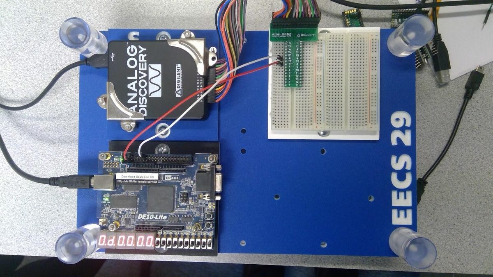
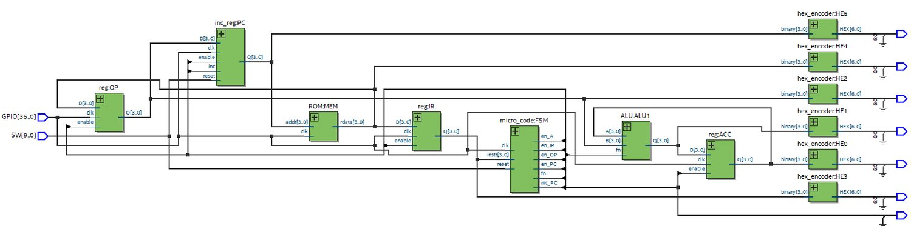

4-bit CPU on an Intel MAX 10 FPGA
- 25logic elements for the CPU
- 22registers
- 4clock cycles per instruction
- 6states in the control FSM
- The goal
- Build a 4-bit CPU from scratch in VHDL on the Intel MAX 10 DE10-Lite FPGA that could run LDA (load accumulator) and ADDA (add to accumulator) instructions from a 16-address ROM, working with a lab partner and a provided set of components.
- What I built
- I wired seven components together (instruction and operand registers, program counter, ALU, accumulator, ROM, and the control FSM) plus six hex displays, then coded a 6-state FSM that completes each instruction in 4 clock cycles and drives every control signal.
- The result
- The CPU used only 25 logic elements and 22 registers. It ran the 8-instruction ROM program at 1 Hz, and then a second program I wrote myself (the accumulator reads 1, 3, 7, 9, A, 8, 6, 2). Both were demonstrated to the instructor. The display at the top of this page replays that second program.

